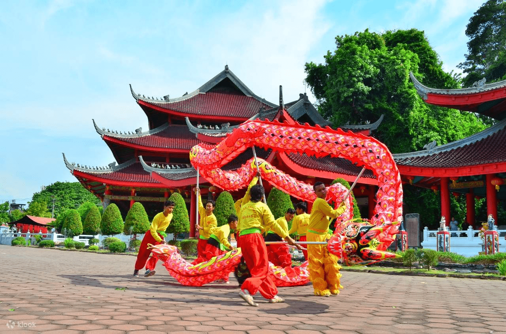
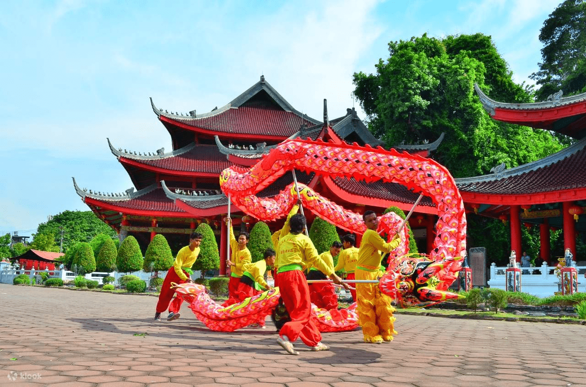

Ikon Semarang
Tugu Muda sebuah monumen bersejarah di Semarang yang mencerminkan semangat perjuangan para pemuda pada masa Kemerdekaan Republik Indonesia.
Wisata Sam Poo Kong adalah tempat wisata dengan keindahan bangunan khas dengan gaya bangunan Tiongkok, sehingga membuat suasana berwisata akan seperti berada di negeri tirai bambu.
Gereja Blenduk memiliki fungsi sebagai tempat beribadah, serta bangunan yang berstatus sebagai cagar budaya.
Masjid Agung Semarang atau Masjid Agung Jawa Tengah merupakan ikon tempat wisata religi kebanggan Semarang. Bangunan masjid megah ini memiliki banyak keunikan dan nilai budaya yang menarik.
Lawang Sewu dimana seribu pintu dan jendela yang membuka ke masa lalu, bangunan kolonial belanda yang memiliki cerita setiap sudutnya.